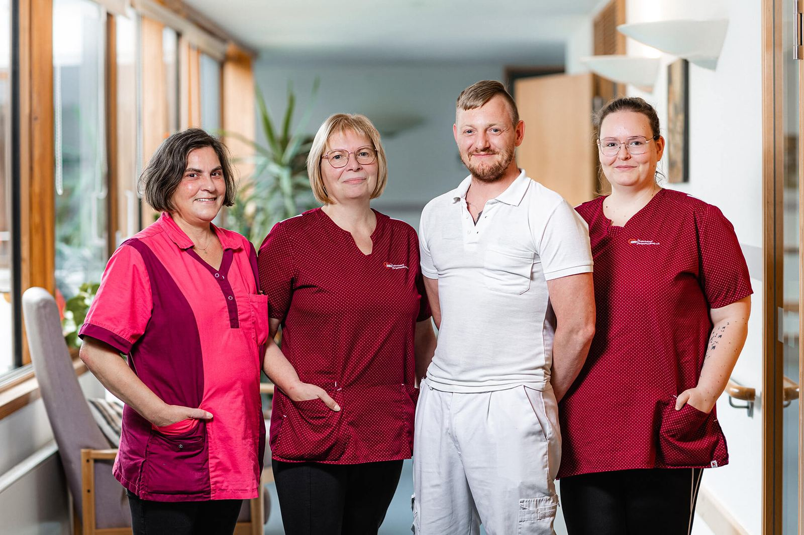
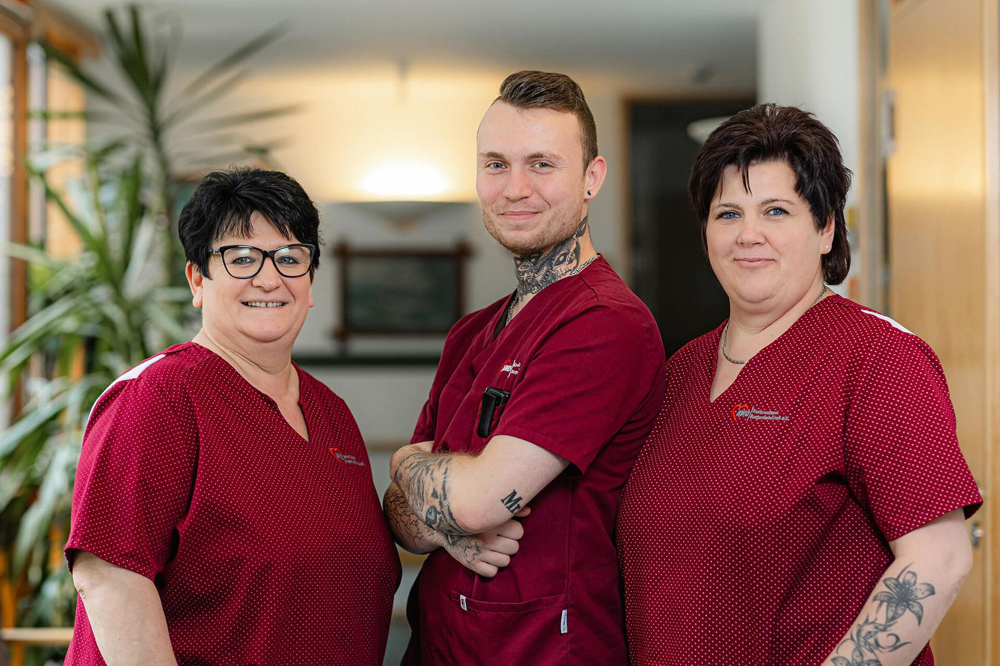
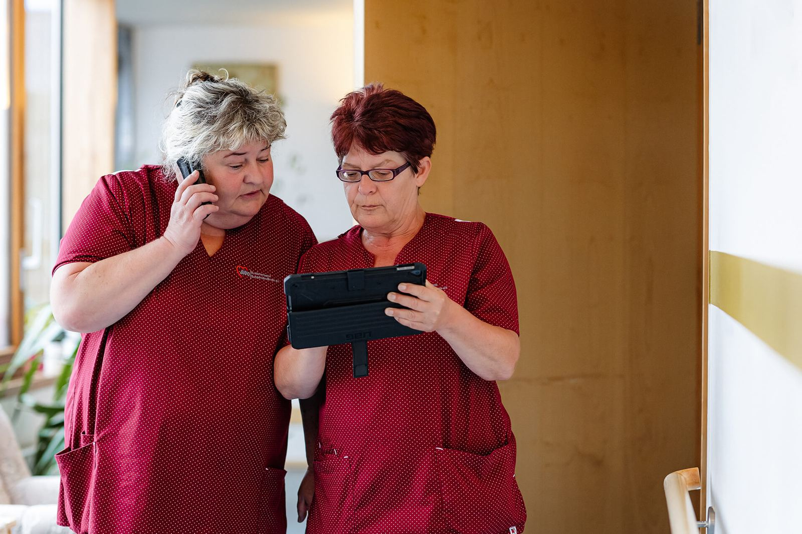
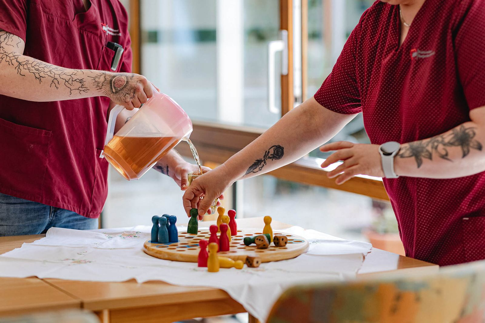

Pflege mit Wunschdienstplan
Die AWO im Burgenlandkreis sucht Pflegefachkräfte und Auszubildende in Hohenmölsen, Zeitz und Naumburg. Sie hinterlassen Ihre Nummer, wir rufen innerhalb von 24 Stunden zurück.
Rückruf anfordernÜber uns
Die AWO ist seit 1990 im Burgenlandkreis zu Hause, als gemeinnütziger Träger mit Pflegeheimen, ambulantem Dienst, Tagespflege, Wohnen und einem Kinderhaus. Wer bei uns pflegt, arbeitet in der Nähe von zu Hause und in einem Team, das den Dienstplan nach den Wünschen der Mitarbeitenden schreibt.
Was wir bieten
- WunschdienstplanSie sagen, wann Sie können. Der Dienstplan richtet sich danach.
- Bezahlung über dem DurchschnittMit Gehaltserhöhung jedes Jahr. Gehaltsrahmen ergänzen
- 30 Tage UrlaubUnd eine jährliche Sonderzahlung.
- Betriebliche AltersvorsorgeBei einem Träger, der seit über 30 Jahren hier ist.
- Kostenlose MassagenRegelmäßig, physiotherapeutisch, für alle Mitarbeitenden.
- FortbildungBetriebliche Entwicklungs- und Fortbildungsmöglichkeiten.
- Digitale PflegedokumentationAm Gerät statt auf Papier.
- Ausbildung mit ÜbernahmegarantieIm Seniorenzentrum „Am Rosengarten“, Start jeweils am 1. August.
Offene Stellen
Jede Stelle hat eine eigene Seite mit Aufgaben, Dienstzeiten und Gehalt. Sie erscheint so auch in der Google-Stellensuche.
-
Pflegefachkraft(m/w/d)
Alten- und Pflegeheim Hohenmölsenab sofort · Wunschdienstplanmehr erfahren -
Pflegefachkraft(m/w/d)
Ambulanter Pflegedienst Zeitzab sofort · Wunschdienstplanmehr erfahren -
Pflegefachkraft(m/w/d)
Seniorenzentrum „Am Rosengarten“ Naumburgab sofortmehr erfahren -
Ausbildung Pflegefachkraft(m/w/d)
Seniorenzentrum „Am Rosengarten“ NaumburgStart 1. August · Übernahmegarantiemehr erfahren
Nichts Passendes dabei? Hinterlassen Sie trotzdem Ihre Nummer, wir melden uns, wenn etwas frei wird.
Das Team
Fotos aus dem Alten- und Pflegeheim Hohenmölsen. So sieht ein ganz normaler Dienst bei uns aus.

Am Eingang des Pflegeheims

Ein Teil des Teams

Dokumentation am Tablet

Nachmittag im Speiseraum

Unterwegs im Haus

Alten- und Pflegeheim Hohenmölsen
Arbeitsorte
Stationär, in der Tagespflege oder ambulant auf Tour. Alles im Umkreis von Hohenmölsen, Zeitz und Naumburg.
- Alten- und PflegeheimHohenmölsen
80 Seniorinnen und Senioren, mitten im Zentrum. Mit Cafeteria, Friseursalon und eigenem Speiseraum. A9 und A38 in der Nähe.
mehr erfahren  Ambulanter Pflegedienst und TagespflegeZeitz
Ambulanter Pflegedienst und TagespflegeZeitzTouren in Zeitz, Hohenmölsen, Teuchern und Umgebung. Tagespflege montags bis freitags, 8–16 Uhr.
mehr erfahren- Seniorenzentrum „Am Rosengarten“Naumburg
63 Bewohnerinnen und Bewohner auf vier Etagen. Hier bilden wir aus.
mehr erfahren
Außerdem gehören dazu: Altengerechtes Wohnen mit 40 Wohnungen in Hohenmölsen, der Menüservice und das Kinderhaus „Villa Löwenherz“ in Teuchern.
Fragen
-
Nein. Für den ersten Schritt reichen Name, Telefonnummer und Ihre Qualifikation. Zeugnisse bringen Sie zum Gespräch mit.
-
Im Seniorenzentrum „Am Rosengarten“ ja, die Stelle ist in Vollzeit oder Teilzeit ausgeschrieben. Für Hohenmölsen und Zeitz klären Sie den Stundenumfang im Rückruf. Antwort für Hohenmölsen und Zeitz von der AWO
-
Ja. Berufserfahrung ist erwünscht, aber nicht zwingend. Voraussetzung für die Fachkraftstellen ist das Examen in der Alten- oder Krankenpflege.
-
Die Leitung der Einrichtung, für die Sie sich interessieren. Allgemeine Fragen beantwortet Frau Witt in der Geschäftsstelle in Hohenmölsen.
-
Ja, im Seniorenzentrum „Am Rosengarten“ in Naumburg. Die Ausbildung zur Pflegefachfrau oder zum Pflegefachmann startet jeweils am 1. August, mit Übernahmegarantie.
In einer Minute bewerben
Kein Lebenslauf, kein Anschreiben. Sie hinterlassen Ihre Nummer, wir rufen innerhalb von 24 Stunden zurück.